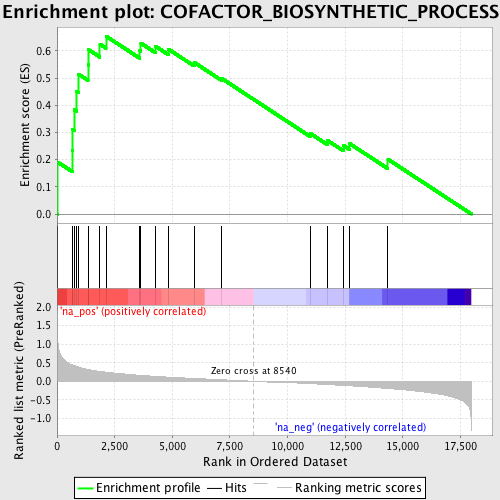
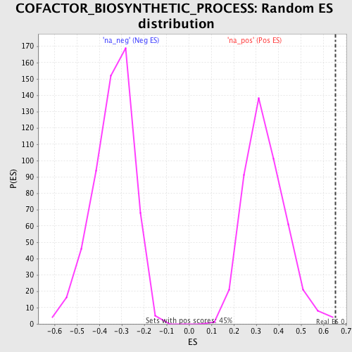

| | | Dataset | GSEA_Cushing_prerank_FC |
| Phenotype | NoPhenotypeAvailable |
| Upregulated in class | na_pos |
| GeneSet | COFACTOR_BIOSYNTHETIC_PROCESS |
| Enrichment Score (ES) | 0.65464485 |
| Normalized Enrichment Score (NES) | 1.9234684 |
| Nominal p-value | 0.0022421526 |
| FDR q-value | 0.008039208 |
| FWER p-Value | 0.128 |
Table: GSEA Results Summary

Fig 1: Enrichment plot: COFACTOR_BIOSYNTHETIC_PROCESS
Profile of the Running ES Score & Positions of GeneSet Members on the Rank Ordered List
| PROBE | GENE SYMBOL | GENE_TITLE | RANK IN GENE LIST | RANK METRIC SCORE | RUNNING ES | CORE ENRICHMENT | | 1 | ME1 | | | 31 | 1.066 | 0.1906 | Yes |
| 2 | GCLC | | | 665 | 0.439 | 0.2346 | Yes |
| 3 | PDSS2 | | | 682 | 0.433 | 0.3119 | Yes |
| 4 | UROS | | | 755 | 0.418 | 0.3833 | Yes |
| 5 | GCLM | | | 842 | 0.400 | 0.4507 | Yes |
| 6 | TSPO | | | 927 | 0.382 | 0.5149 | Yes |
| 7 | COQ2 | | | 1342 | 0.317 | 0.5490 | Yes |
| 8 | ALAS2 | | | 1361 | 0.315 | 0.6049 | Yes |
| 9 | FECH | | | 1860 | 0.265 | 0.6249 | Yes |
| 10 | COQ3 | | | 2122 | 0.246 | 0.6546 | Yes |
| 11 | ALAS1 | | | 3592 | 0.162 | 0.6021 | No |
| 12 | COX10 | | | 3639 | 0.160 | 0.6284 | No |
| 13 | COX15 | | | 4260 | 0.135 | 0.6182 | No |
| 14 | MOCS2 | | | 4839 | 0.112 | 0.6063 | No |
| 15 | CPOX | | | 5946 | 0.074 | 0.5581 | No |
| 16 | COASY | | | 7129 | 0.041 | 0.4997 | No |
| 17 | ALAD | | | 10990 | -0.065 | 0.2965 | No |
| 18 | PDSS1 | | | 11745 | -0.087 | 0.2703 | No |
| 19 | NFE2L1 | | | 12433 | -0.111 | 0.2521 | No |
| 20 | COQ7 | | | 12704 | -0.120 | 0.2588 | No |
| 21 | PPOX | | | 14360 | -0.193 | 0.2014 | No |
Table: GSEA details [plain text format]

Fig 2: COFACTOR_BIOSYNTHETIC_PROCESS: Random ES distribution
Gene set null distribution of ES for COFACTOR_BIOSYNTHETIC_PROCESS